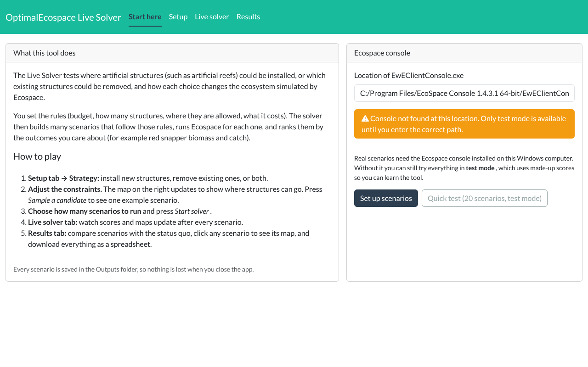
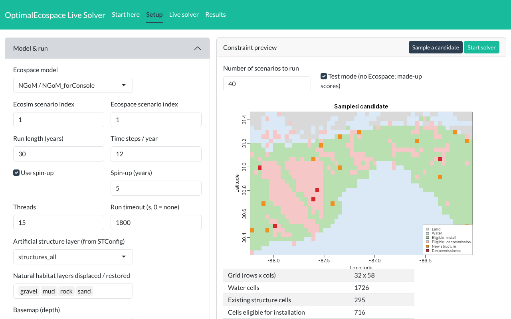
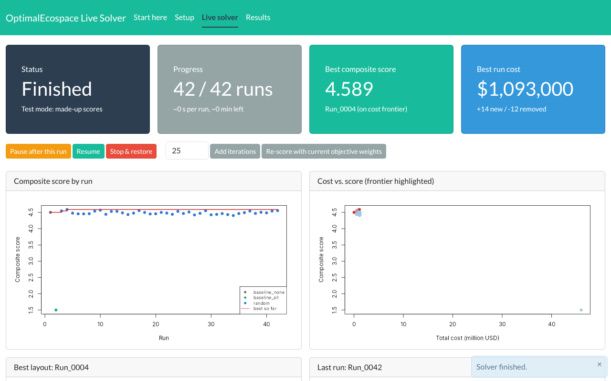
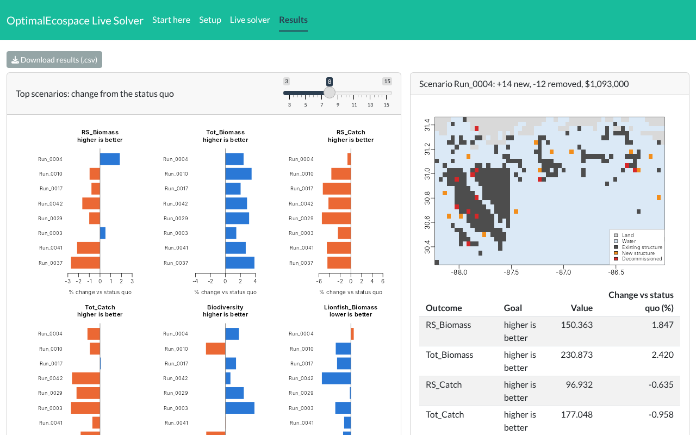

Explore where artificial structures, such as artificial reefs, could be installed or removed, and see how each scenario changes the northern Gulf ecosystem simulated by Ecospace. No modeling experience needed: set the rules, run the scenarios, and compare the outcomes in your web browser.
Install new structures, decommission existing ones, or both. Choose the budget, how many structures, where they are allowed (depth, area, spacing, seafloor type) and what they cost. A live map shows which places qualify.
Pick how many scenarios to test. The solver builds each one within your rules, runs the Ecospace model, and updates the scores and maps after every run. It can also search smarter by refining the best scenario so far.
See how each scenario changes red snapper biomass and catch, total biomass, biodiversity and invasive lionfish compared with doing nothing. Click any scenario to see its map, and download every result as a spreadsheet.
C:\OptimalEcospace.Start Live Solver.bat. In RStudio, open R/LiveSolver/launch.R and click Source instead. The first start installs a few R packages, which takes a few minutes.Real scenarios run the Ecospace model on your own computer, so each one takes a few minutes. Keep the R window open while you use the tool.
Every scenario is saved with its maps and settings, so results can be reproduced and shared.
Questions or ideas? Get in touch.
Screenshots taken in test mode; the scores shown are illustrative, not model results.



